Beurre de ferme à l'ancienne
Écrémé dès la traite, baratté, lavé, pesé puis moulé à la palette, comme le faisaient les anciens. Aucun procédé mécanique.
Doux, au lait cruSalé, au lait cru
Thy-le-Château · depuis quatre générations
Beurre moulé à la palette, fromages frais, yaourts et poulets bio : Catherine et Olivier vendent au magasin de la ferme ce qu'ils produisent ici, avec le lait de leurs vaches.
Lundi, vendredi et samedi matin
4,7 sur 5 · 23 avis Google
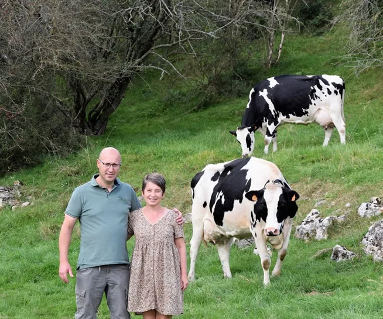
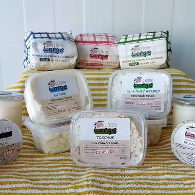
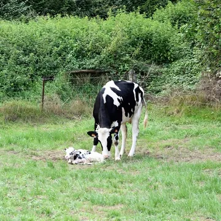
Au magasin de la ferme
Une partie du lait trait chaque jour à la ferme est transformée sur place ; le reste part à la coopérative locale Coferme. Au fil des saisons, les produits changent de couleur et de texture : c'est le lait qui décide.
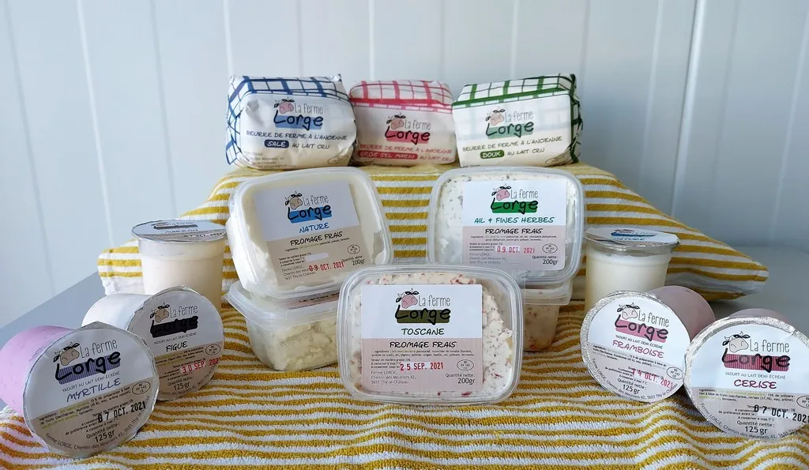
« Redécouvrez les véritables goûts et textures ! »Catherine et Olivier, sur le site de la ferme
Écrémé dès la traite, baratté, lavé, pesé puis moulé à la palette, comme le faisaient les anciens. Aucun procédé mécanique.
Lait pasteurisé, ferments et présure ; le caillé est égoutté puis servi tel quel ou relevé d'épices.
Nature, ou brassés à la main avec des confitures artisanales, selon les saveurs de la saison.
Le liquide rosé au goût aigrelet qui reste après le barattage du beurre. Riche en bactéries lactiques, il se boit nature ou sert en pâtisserie.
Le lait battu est chauffé jusqu'à ce qu'il caille, puis égoutté.
Chauffé, puis conservé à 4 °C.
Selon les saisons et la production, certains produits peuvent manquer : préparez votre commande et elle vous est mise de côté.
Le geste de la maison
Ici, le beurre se fait depuis des générations : la grand-mère, puis la maman, le vendaient déjà dans le village et aux alentours.
Dès la traite, le lait est écrémé à 35 °C pour une crème de qualité.
La crème fermente avant d'être barattée.
Barattée, la crème devient beurre. Ce qui reste, c'est le lait battu.
Le beurre est lavé, puis pesé.
Comme le faisaient les ancêtres, puis emballé dans son papier à carreaux.
« Aucun procédé mécanique n'est utilisé afin de préserver son goût et sa texture authentiques. »Le site de la ferme Lorge
Volaille bio
Élevés sur une litière de paille, nourris uniquement d'aliments bio, sans accélérateur de croissance ni antibiotique. Toutes les douze semaines, un nouveau lot de poussins arrive à la ferme.
de parcours extérieur, au minimum, pour chaque poulet.
avant la première sortie dehors, pour les protéger des rapaces.
au minimum avant l'abattage.
entre deux lots de poussins.
Entiers ou découpés. La ferme travaille avec l'abattoir Belki, sous la marque « Le Roi des Champs », ce qui permet de proposer des poulets entiers ou en morceaux, dans des normes d'hygiène strictes.
Emballés sous vide pour garder leur fraîcheur et leur goût. Commandés en ligne, ils se retirent gratuitement à la ferme ou se font livrer en Belgique en colis isotherme.
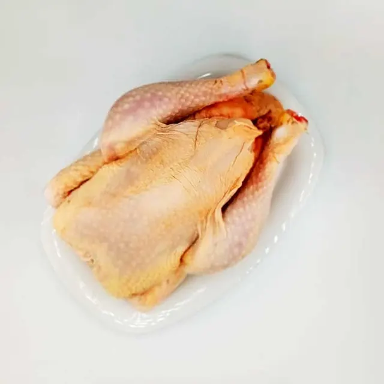
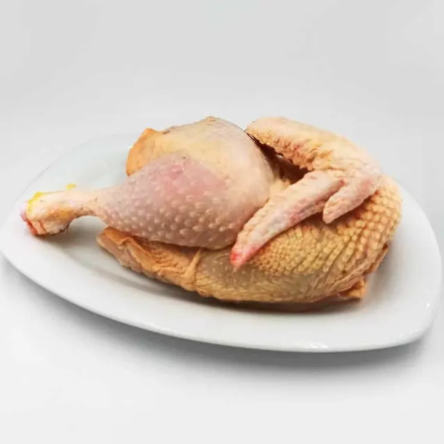
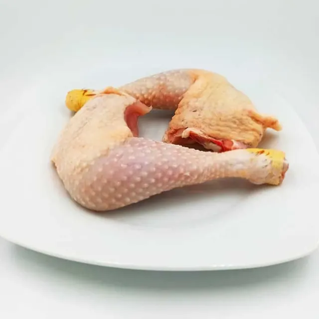
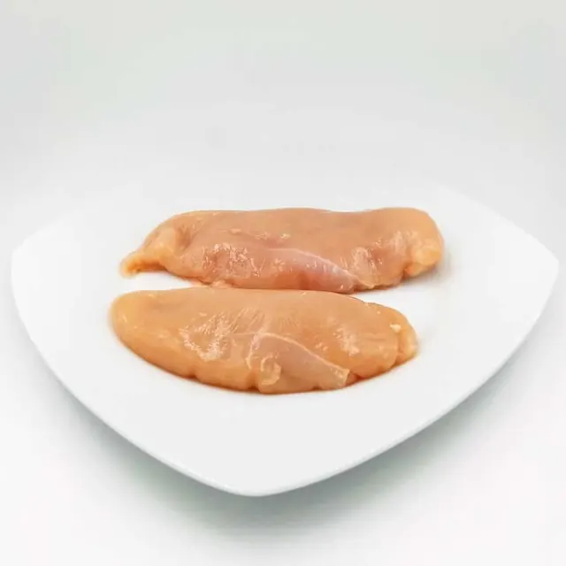
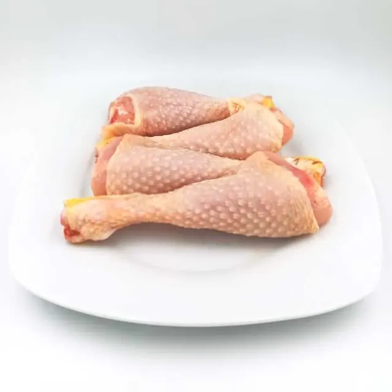
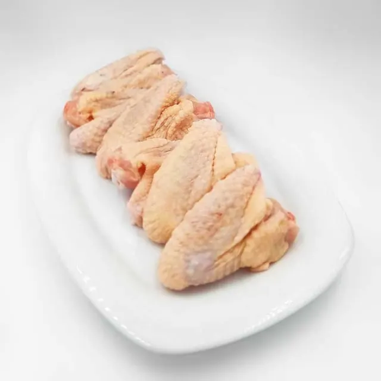
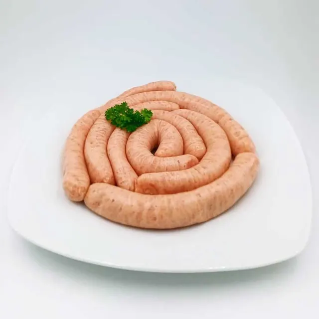
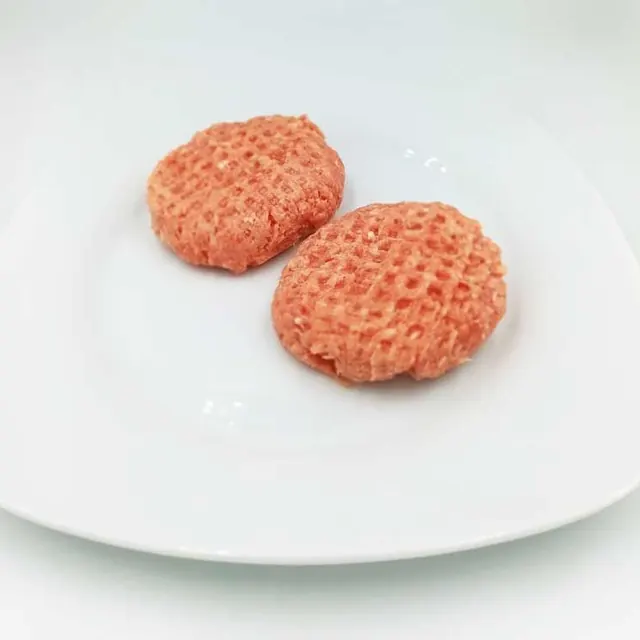
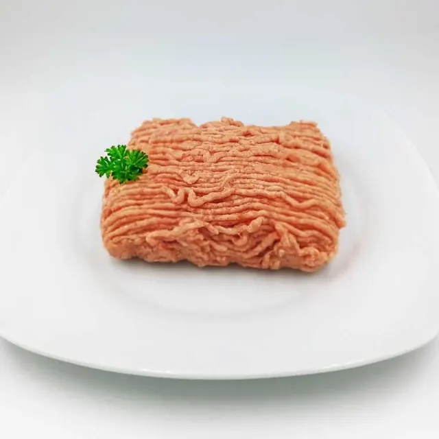
Faites glisser pour voir les 9 découpes
Foies, petit ravier 8,60 €/kgFilets hauts de cuisse sans peau 20,70 €/kgGrosses saucisses de poulet, 3 pièces 17,50 €/kg
Prix au kilo relevés sur la boutique en ligne de la ferme le 19 novembre 2026. Pour les pièces vendues à la découpe, le prix est ajusté à la pesée.
Retrait gratuit à la ferme
Choisissez vos produits et votre heure de passage : la ferme prépare votre commande avant votre arrivée.
Prochaine livraison de volaille bio : vendredi 4 et samedi 5 décembre. Commandes jusqu'au samedi 28 novembre.Dates relevées sur la boutique en ligne de la ferme le 19 novembre 2026.
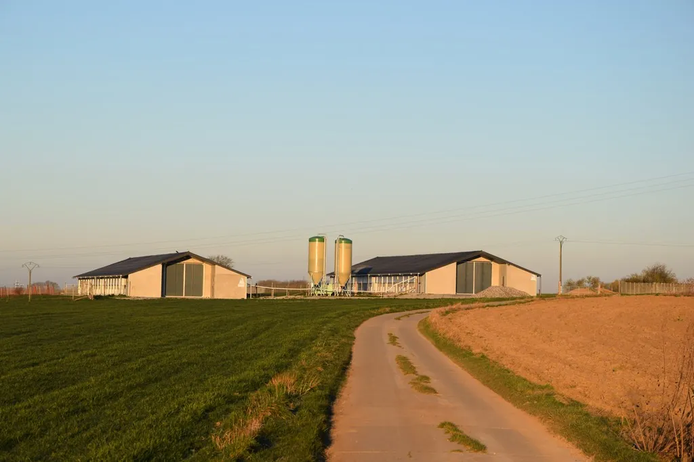
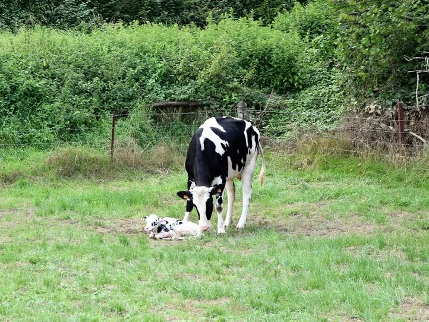
La ferme
« Depuis quatre générations, notre famille gère une exploitation d'élevage et de culture à Thy-le-Château. » En reprenant la ferme, Catherine et Olivier ont gardé la fabrication traditionnelle du beurre, puis ajouté les fromages frais, les yaourts et l'élevage de poulets bio.
Les vaches, toutes nées sur l'exploitation, mangent surtout le fourrage de la ferme, avec du lin et de la luzerne, et pâturent au creux de la vallée de l'Eau d'Heure, à l'ombre des bosquets. Un lait riche en oméga-3, et une production suivie par l'AFSCA pour l'hygiène, la qualité et la traçabilité.
Catherine et Olivier
« La qualité au juste prix. »
Avis Google
Horaires du magasin
| lundi | 8 h – 12 h |
|---|---|
| mardi | fermé |
| mercredi | fermé |
| jeudi | fermé |
| vendredi | 8 h – 18 h |
| samedi | 9 h – 12 h |
| dimanche | fermé |
Pas le temps de passer ? Les commandes de la boutique en ligne peuvent aussi être livrées partout en Belgique, en colis isotherme ; les frais dépendent du lieu et du poids. Paiement en ligne par Bancontact.